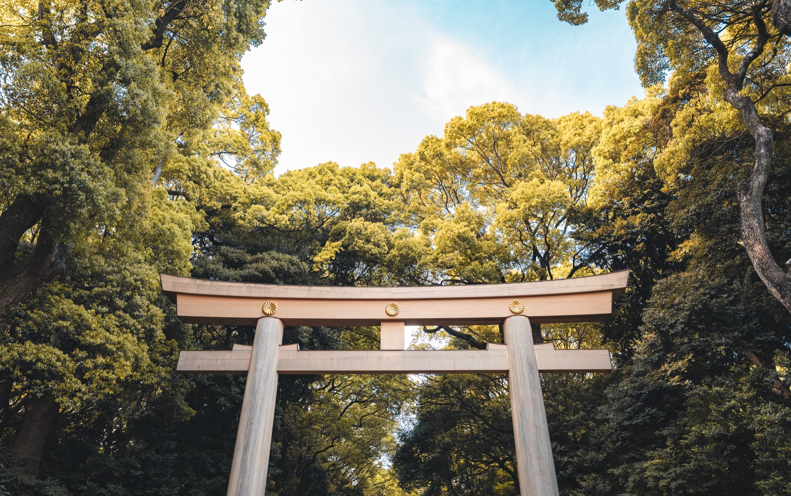
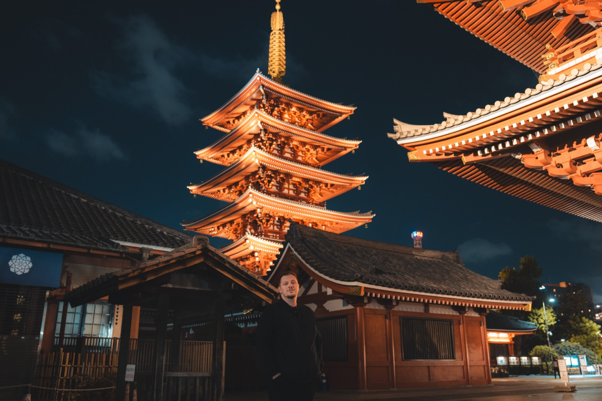

Fotografie aus Leidenschaft
Hobbyfotograf aus Leidenschaft — Landschaften, Architektur & das Leben dazwischen
Galerie ansehen
Über mich
Schon seit einigen Jahren begleitet mich die Kamera durch den Alltag — auf Reisen, bei Spaziergängen und in ruhigen Momenten. Fotografie ist für mich kein Beruf, sondern eine Art, die Welt bewusster wahrzunehmen.
Mich faszinieren natürliches Licht, ruhige Kompositionen und echte Emotionen. Diese Seite ist eine Sammlung meiner liebsten Aufnahmen — entstanden ohne Druck, aus reiner Freude am Sehen und Festhalten.
Portfolio
Kontakt
Du hast Fragen zu einem Bild, möchtest ein Shooting anfragen oder einfach nur Hallo sagen? Ich freue mich über eine Nachricht.
squaredmoments@gmail.com